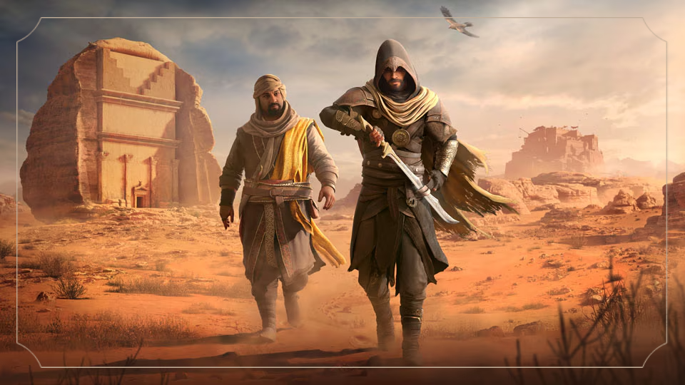
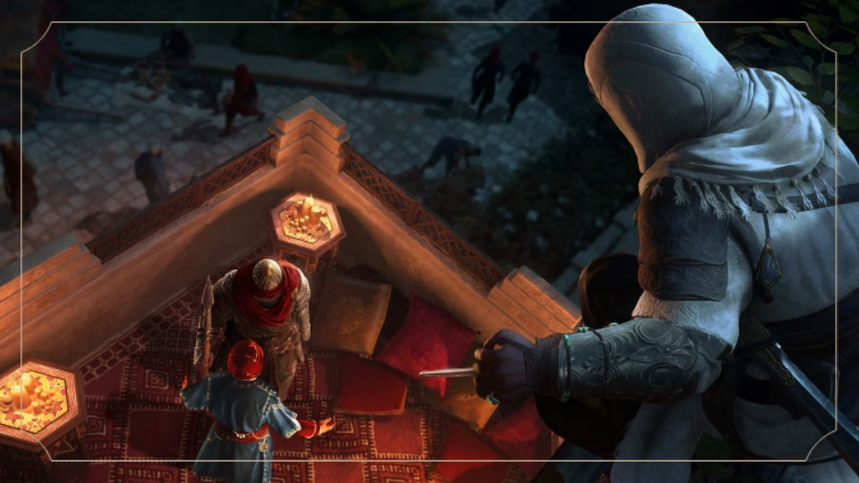
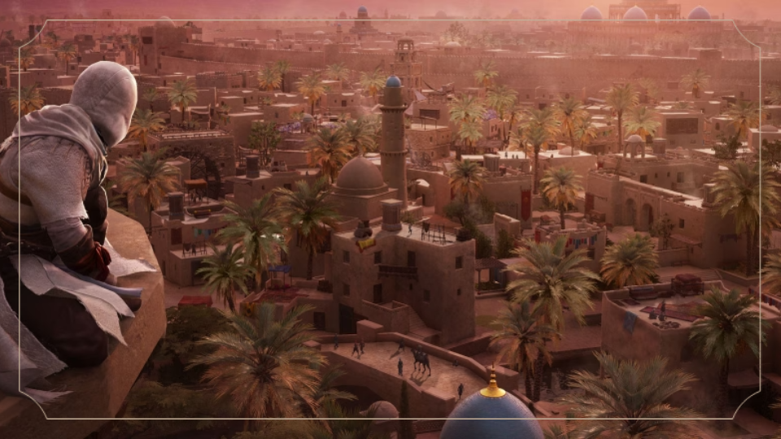
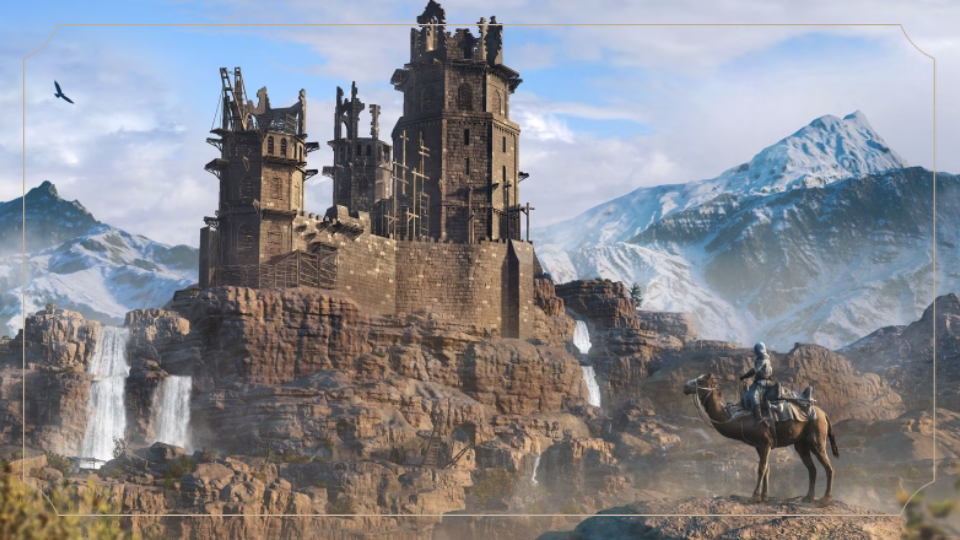

“La verdad no se encuentra en la luz ni en la
sombra. Se forja en el filo de nuestras decisiones”

Valle del recuerdo
Valle del recuerdo es una actualización gratuita que introduce
la asombrosa región de AlUla y presenta un nuevo arco narrativo para Basim. Explora un imponente
paisaje de desiertos y oasis mientras descubres secretos familiares y te enfrentas a una banda
de desalmados que amenazan la paz del valle. Disfruta de las mejoras en la mecánica de juego
solicitadas por los fans, como la repetición de misiones, un parkour más fluido y una
personalización más profunda que garantiza una experiencia más inmersiva.
Descubre una aventura de acción con una narrativa bien hilada que sigue los pasos de un joven
desafiante a medida que se convierte en un Maestro Assassin con un destino conflictivo. Conoce a
los personajes que marcarán el destino de Basim y que podrían ser algo más de lo que
aparentan...

El Assassin Definitivo
Conviértete en el Assassin más versátil de la historia de la saga. Recorre la ciudad
haciendo parkour y aprovecha el mayor abanico de herramientas disponibles hasta la fecha.
Consigue contratos de la Hermandad de los Assassins, busca pistas vitales y elimina
sigilosamente a los objetivos con asesinatos más viscerales que nunca.

Una ciudad inmersiva y
reactiva
Explora una ciudad densa y vibrante en la que los habitantes reaccionan a todos tus movimientos.
Descubre los secretos de cuatro distritos, desde el industrial Al-Karj hasta los frondosos
jardines de la Ciudad redonda de Bagdad. Experimenta los sorprendentes acontecimientos del mundo
e interactúa con las figuras históricas que dieron forma a la Edad de Oro de Bagdad.

Un tributo a un
original
Experimenta una versión moderna de las características y la mecánica de juego que han definido a
una saga durante 15 años. Viaja a Alamut, el hogar legendario de los Asesinos que sentaron
las bases del Credo, en este sentido homenaje al juego con el que empezó todo.
Adéntrate en el mundo de Assassin's Creed Origins Mirage y descubre
nuestro libro de ilustraciones digital y la banda sonora digital del juego.
Para acceder al contenido tienes que: elegir una edición disponible,
inicia el juego al menos una vez y accede a la plataforma más abajo con la misma cuenta de Ubisoft
con la que juegas a Assassin's Creed Mirage.
Conviértete en una leyenda vikinga que desde la infancia te han educado con historias de batalla y
gloria. Saquea a tus enemigos, amplía tu asentamiento, y aumenta tu poder político en la carrera por
ganarte un sitio entre los dioses del Valhalla.
Las mecánicas avanzadas de juego de rol te permiten personalizar el crecimiento de tu personaje e influir
en el mundo que te rodea. Cada decisión que tomes, ya sean alianzas políticas y estrategias de combate o
diálogos y mejoras de equipo, influirá en tu camino a la gloria.
Fecha de lanzamiento: 5 octubre 2023
Desarrollador: Ubisoft Bordeaux
Género: Acción / Aventura
Disponibilidad del juego: PlayStation 4 / Xbox One
/
PC / Amazon Luna